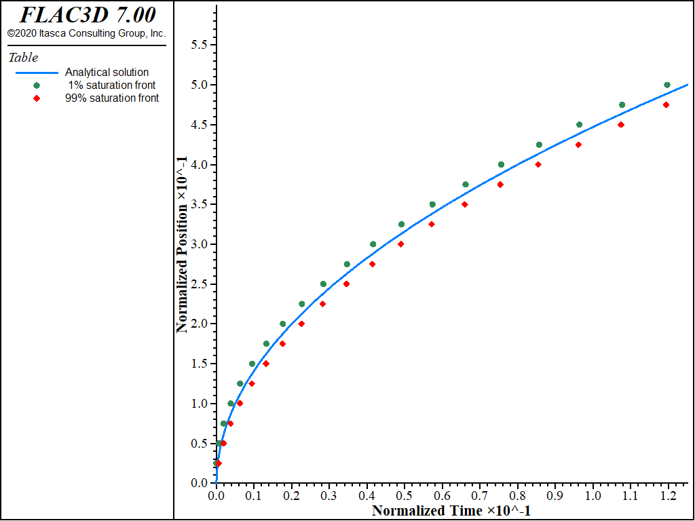
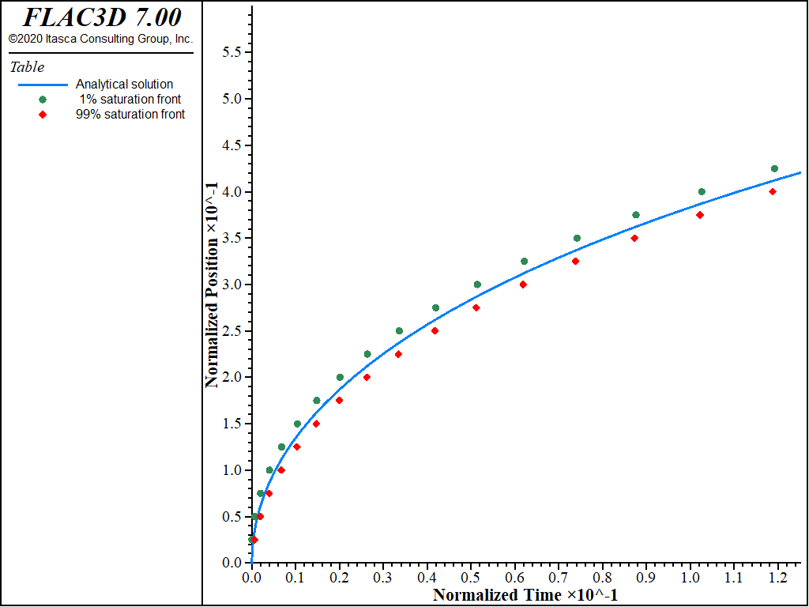

多孔介质的一维充填
注意
要在 FLAC3D 中查看此工程，请使用菜单命令 。选择“Fluid/1DFillingPorousRegion”，再选择“1DFillingPorousRegion.f3dprj”即可加载。该工程的主数据文件（main data files）在本示例末尾给出。
在本问题中，流动在施加于底部的恒定压力 \(p_{_{o}}\) 作用下穿过一个初始干燥、横向范围很大的多孔层。在考虑重力和不考虑重力两种情况下，将充填锋面的瞬态位置与精确的陡锋面解进行比较。
Voller 等（1996）在陡锋面、刚性多孔基质和不可压缩牛顿流体的假定下给出了该问题的解析解。在他们的解中，流动由达西定律控制，自由面前方的空气中为恒定的大气压。
设参考坐标系的 \(x\) 轴沿流动方向，原点位于该层底部。锋面位置 \(x_{f}\) 的解可用两个无量纲变量 \(\widehat{t}=\) \(t/T^{\ast }\)和 \(\widehat{x}=x_{f}/L^{\ast }\)，以及一个无量纲参数 \(\gamma\) 表示，后者由表达式 \(T^{\ast}=n\mu /p_{o}\)、\(\ L^{\ast }=\sqrt{\kappa }\) 和 \(\gamma =\sqrt{\kappa }\) \(\rho g/p_{o}\) 定义。在这些公式中，\(n\) 为孔隙率，\(\kappa\) 为固有渗透率（迁移系数 \(k\) 与动力黏度 \(\mu\) 的乘积），\(\rho\) 为流体密度，\(g\) 为重力加速度。
当忽略重力时，解具有以下形式
对于重力作用下的充填，锋面位置由下式给出
可以证明，当 \(\gamma\) 趋于零时，方程(2)收敛于无重力的解。
充填问题的数值解以无量纲形式给出。为得到该解，模拟中采用了缩放的物性：\(p_{o}\) = 1、\(k\) = 0.25、\(n\) = 0.5；对于重力流动，\(\rho _{w}\) = 1、\(g\) = 1。此外，在上述定义中取 \(\mu\) = 4，则模拟的特征参数为 \(T^{\ast }\) = 2、\(L^{\ast }\) = 1、\(\gamma\) = 1。
为模拟不可压缩流动，流体体积模量 \(K_{f}\) 取为远大于模拟中孔隙压力变化的值（\(K_{f}\) = 100）。两种情况下，网格均为由 25 个网格单元组成的柱体，高 0.625 个单位、宽 0.025 个单位。孔隙压力和饱和度的初始值为零。孔隙压力固定为 \(p_{o}\)，模型底部的饱和度取为 1。模拟总时长为 0.25 个时间单位（\(\widehat{t}\) = 0.125）。FISH 函数 FLAC 前端（flacfront） 记录节点达到 1% 和 99% 饱和度的时刻。解析陡锋面解由另一个 FISH 函数 解（solution） 计算。无重力情形的数据文件列于“1DFillingPorousRegion-NoGravity.dat”；有重力情形的数据文件列于“1DFillingPorousRegion-Gravity.dat”。
考虑重力和不考虑重力的结果分别示于图 1（Figure 1） 和 图 2（Figure 2）。如这些图所示，陡锋面解在上下两侧分别受 99% 和 1% 饱和度锋面所界定。实际上，这些锋面之间的竖向距离直接对应于充填锋面传播方向上的网格尺寸。（只有当某节点下方节点的孔隙压力变为正值时，该节点的饱和度才开始增大，因此在该处达到完全饱和。）该距离可通过增加柱体高度方向的网格单元数量来减小。节点孔隙压力随时间的演化呈阶梯状，且流体越不可压缩，这种阶梯越明显。出现这种行为是因为节点必须先完全饱和，其孔隙压力才能增大。在不改变网格尺寸的情况下减小该效应的一种方法，是在流体流动公式中引入非饱和区（毛细压力）的流动。


图 1：充填锋面的位置（\(\widehat{x}\) 与 \(\widehat{t}\) 的关系）——无重力（解析解为实线；数值结果为虚线）。


图 2：充填锋面的位置（\(\widehat{x}\) 与 \(\widehat{t}\) 的关系）——有重力（解析解为实线；数值结果为虚线）。
数据文件
1DFillingPorousRegion-NoGravity.dat
model new
model large-strain off
model title "One-dimensional filling - no gravity"
fish automatic-create off
model configure fluid
program call 'fishFunctions'
[setup]
zone create brick size 1 1 25 point 1 (0.025,0,0) point 2 (0,0.025,0) ...
point 3 (0,0,0.625)
; --- 流体流动模型 ---
zone fluid cmodel assign isotropic
zone fluid property permeability [c_perm] porosity [c_poro] biot 0. ;
zone fluid biot on
zone gridpoint initialize biot 100
zone gridpoint initialize saturation 0.0
zone face apply pore-pressure [c_p0] range position-z 0
; --- 设置 ---
model mechanical active off
model fluid active on
[solution1]
table '1' label 'Analytical solution'
table '2' label ' 1% saturation front'
table '3' label '99% saturation front'
; --- 试验 ---
[global lzf=0.025, uzf=0.025]
model solve fluid time-total 0.25
model save 'asat1'
1DFillingPorousRegion-Gravity.dat
model new
model large-strain off
model title "One-dimensional filling - with gravity"
fish automatic-create off
model configure fluid
program call 'fishFunctions'
[setup]
zone create brick size 1 1 25 point 1 (0.025,0,0) point 2 (0,0.025,0) ...
point 3 (0,0,0.625)
; --- 流体流动模型 ---
zone fluid cmodel assign isotropic
zone fluid property permeability [c_perm] poros [c_poro] biot 0.
zone fluid biot on
zone gridpoint initialize biot 100
zone gridpoint initialize saturation 0.0
zone face apply pore-pressure [c_p0] range position-z 0
; --- 设置 ---
zone initialize fluid-density [c_den]
model gravity 0 0 [c_grav]
model mechanical active off
model fluid active on
[solution2]
table '1' label 'Analytical solution'
table '2' label ' 1% saturation front'
table '3' label '99% saturation front'
; --- 试验 ---
[global lzf=0.025, uzf=0.025]
model solve fluid time-total 0.25
model save 'asat2'
| 这些内容对您有帮助吗？… | FLAC3D © 2019, Itasca | 原文更新于 2020 年 10 月 8 日 |